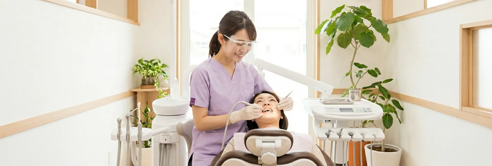
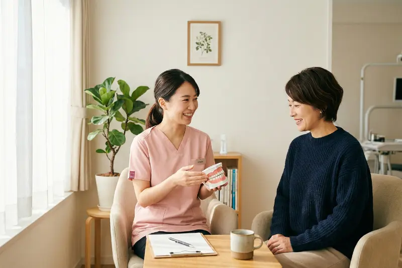

一般歯科・予防歯科
GENERAL / PREVENTIVE DENITSTRY
生涯、自分の歯で噛み続けるために。

「治す」だけでなく「守る」治療を
当院では、インプラントや審美歯科などの専門的な自費診療に加え、ベースとなる虫歯治療や歯周病治療（一般歯科）、そして治療後の良い状態を維持するためのメンテナンス（予防歯科）にも等しく力を入れています。
どんなに優れた人工物（インプラントやセラミック）も、患者さまご自身の生きた「天然の歯」にはかないません。今ある歯をできる限り削らず残すこと、そして「そもそも虫歯や歯周病にならない状態」を作ることが、当院の最大の目標です。
一般歯科（虫歯・根管・歯周病）
予防歯科（定期検診・クリーニング）
治療が終わってからが、本当のスタートです。
当院では3ヶ月〜半年に一度の「定期検診」をおすすめしています。
定期検診の主なメニュー
-
01
PMTC（プロのクリーニング）
ご自宅の歯磨きでは落としきれない「バイオフィルム」や「歯石」「着色汚れ」を、専用の機器を用いて徹底的に除去します。施術後は歯の表面がツルツルになり、虫歯菌が付着しにくくなります。
-
02
フッ素塗布
歯の質を強くし、初期の虫歯を修復（再石灰化）する働きがあるフッ素を歯の表面に塗布します。
-
03
噛み合わせチェック（インプラント等の確認）
全体の噛み合わせのバランスが崩れていないか、またインプラントやセラミックの被せ物に問題が生じていないかをプロの目で厳しくチェックします。
-
04
ブラッシング指導（TBI）
患者さま一人ひとりのお口の状態やブラッシングの癖を把握し、正しい歯ブラシの当て方や、デンタルフロス・歯間ブラシの使い方を指導します。
保険診療と自費診療の違い
当院では保険診療も行っておりますが、「より美しく、より長持ちし、再発リスクを抑える」ことを目的とする場合、使用できる材料や時間に制限がない【自費診療】をおすすめする場合がございます。
治療の前に必ずそれぞれのメリット・デメリットをご説明し、患者さまご自身にお選びいただきますのでご安心ください。
- ■ 保険診療：病気（虫歯・歯周病）を治し、機能（噛むこと）を最低限回復させるための治療。国が定めた安価な材料（銀歯や安価なプラスチック）を使用します。
- ■ 自費診療：機能の回復に加え、「美しさ（審美性）」と「長持ち（適合性・耐久性）」を追求する治療。セラミックやゴールド、インプラントなど、高品質な材料と高度な技術を使用します。